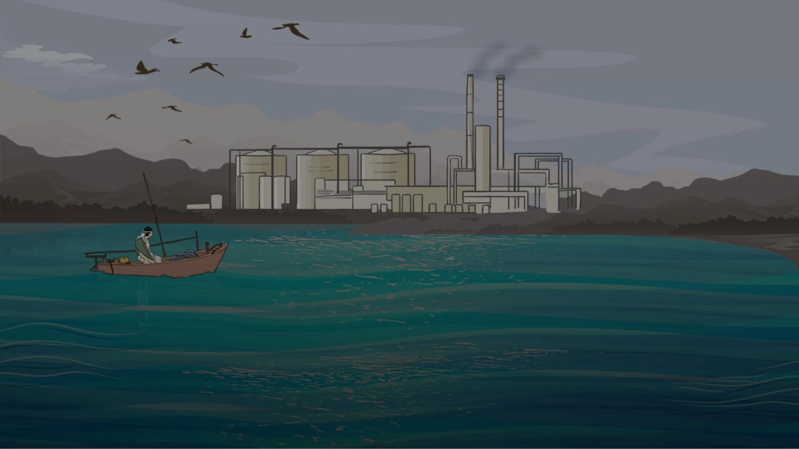
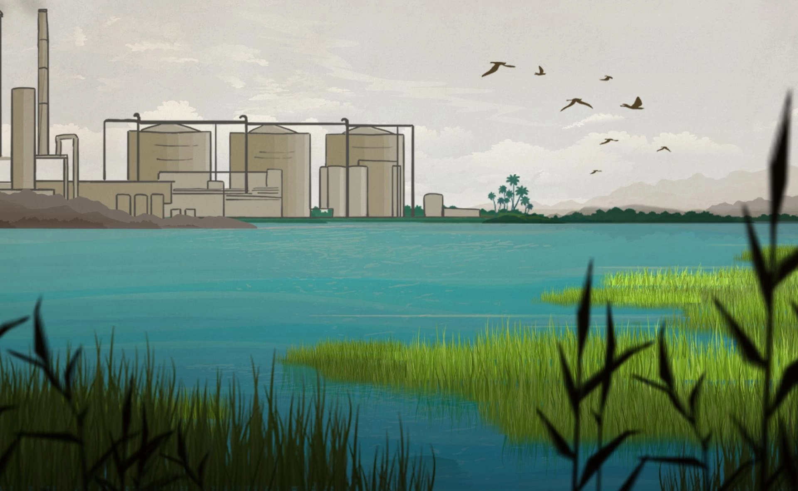

التكلفة الخفية
أربع وستون سنة من سنوات عمره القريب من الثمانين، قضاها الصياد البحريني"السيد جعفر البلادي" في مياه الخليج العربي، الذي عاش هو وأولاده وأحفاده من خيره، لكن التغييرات التي تشهدها مياهه جعلته يهجر المهنة التي لم يعرف غيرها طيلة عمره.
يعيش "البلادي"، هو وأكثر من نصف سكان البحرين، على شاطئ الخليج العربي، يعرفه ويعرف مياهه كما يعرف نفسه، "في نهاية الثمانينيات من القرن الماضي بدأ البحر يتغيّر بسبب بناء محطات التحلية" حسب قوله.

لاحظ "البلادي" زيادة الملوحة في الخليج العربي، ويؤكد رؤيته للملح على شاطئ منطقة "سترة" الواقعة في شرق الخليج العربي على بعد عشرة كيلومترات من العاصمة البحرينية المنامة (6 أميال تقريبا) والتي تضم محطة تحلية تحمل نفس الاسم (سترة) وتُعدّ الأقدم في البحرين التي بدأت في تحلية المياه عام ١٩٧٥.
حال البلادي هو حال أربعة آلاف وخمسمائة صياد موزعين على شواطئ البحرين، يعانون من تراجع الموارد السمكية وتغييرات في جودة المياه بفعل محطات التحلية المنتشرة على ساحل الخليج، كما ترك بعضهم المهنة لقلة العائد من ورائها.


وفق من تحدثت معهم "مواطن" من خبراء وباحثين، إضافة لدراسات علمية منشورة، تسببت محطات تحلية "الدور 1 و 2" في زيادة ملوحة مياه الخليج العربي في البحرين عن المعدلات الطبيعية، بفعل صرف المياه المرتجعة من التحلية في أعماق قليلة، مما أثّر بالسلب على الحيوانات القاعية والحشائش البحرية وبالتبعية على صيادي المنطقة.
تقع محطة تحلية "الدور 1" على الساحل الجنوبي الشرقي للبحرين، ودخلت مرحلة التشغيل الكامل بشكل رسمي في فبراير 2012 لتلبية الطلب المتزايد على مياه الشرب والكهرباء، بسعة يومية إجمالية تبلغ 218 ألف متر مكعب (58 مليون جالون). تم تطوير المحطة كمشروع بناء وتملك وتشغيل (BOO) بمشاركة القطاع الخاص.
وفي مارس 2019، وبعد سبع سنوات من تشغيل محطة "الدور 1"، وقّعت اتفاقية تدشين محطة جديدة باسم محطة "الدور 2" على مساحة تتجاوز 192 ألف متر مربع، بهدف توليد 1500 ميجاوات من الطاقة، على أساس تقنية توربينات الغاز ذات الدورة المركبة (CCGT)، وتحلية 58 مليون جالون من المياه يوميًا عبر تقنية التناضح العكسي لمياه البحر -التي تستخدمها محطة "الدور 1" أيضًا- ودخلت مرحلة التشغيل الكامل في الربع الثاني من العام 2022.
بحسب دراسة بعنوان: "تأثير تصريف المحلول الملحي من محطة تحلية المياه بالتناضح العكسي في الدور، على تكوين الأنواع الحيوانية في الساحل الشرقي للبحرين"، نشرت في العام 2019؛ فإن المحلول الملحي الذي يتم تصريفه من محطة تحلية المياه بـ"الدور" أدى إلى ظروف بيئية قاسية .
جمع أصحاب الدراسة عينات للمياه من عشر نقاط، على مسافات متفاوتة من مخرج تفريغ المحطة، ومن أعماق تتراوح بين أقل من متر واحد إلى 7 أمتار، لقياس الملوحة والمد والجزر؛ فوجدوا أن ملوحة المياه تجاوزت 55% بالقرب من مخرج تفريغ المحطة، وهو أعلى بكثير من ملوحة مياه البحر الطبيعية (حوالي 35%)، مما يشكل خطرًا على النظم البيئية البحرية المحلية. كما تجاوزت درجات حرارة المياه بالقرب من موقع التفريغ الـ 38 درجة مئوية (100.4 درجة فهرنهايت)؛ خاصة خلال أشهر الصيف؛ ما يشير إلى تأثير حراري ملحوظ .
كما أظهرت الدراسة انخفاضًا في التنوع البيولوجي ووفرة التجمعات القاعية الدقيقة في الغالب، في المواقع المجاورة لمخرج محطة تحلية المياه، وقد لوحظت عدة حالات من نفوق الأسماك واختفاء الأنواع البحرية القاعية؛ مثل شوكيات الجلد في محيط محطة تحلية المياه بسبب بطء معدل النمو، وفشل آلية التنظيم الإسموزي، وانكماش خلايا الجسم، وخلل في عمل الجهاز الغدد الصماء .

نظرًا لعدم وجود معيار لتدرج الملوحة في البحرين، قارنت الدراسة نتائجها مع معيار الجودة الذي وضعته الهيئة العامة للبيئة في الكويت لإطلاق مياه التبريد إلى منطقة البحر، أشارت المقارنة إلى أن تركيز الملوحة في معظم مواقع أخذ العينات كانت أعلى من معايير تصريف النفايات السائلة بمتوسط يتراوح بين 2.5%-9.0%. انعكس تأثير تركيز الملوحة العالي على تكوين الأنواع القاعية؛ حيث تلعب الملوحة دورًا مهمًا في نمو وحجم الحياة المائية، واضطراب الأنواع البحرية، في الغالب الأنواع المهاجرة، كما هو الحال بالنسبة لأنواع الأسماك التجارية الشائعة؛ مثل سمكة بومفريت الفضية، وسمك الشاد الذي يعتبر جزءً من دورة هجرتهم.
وهو ما يؤكده "البلادي" بقوله: "اختفت أنواع كثيرة من الأسماك التي كانت تتوافر بكميات كبيرة، وكانت تُصدّر خارج البحرين، منها سمك الميد الذي كان متاحًا حتى عام 2002، كان الأطفال من كثرته يصطادونه من على الشواطئ، وكان سعره وقتها لا يتجاوز النصف دينار للكيلو جرام لسهولة صيده، نتيجة تواجده على سطح البحر، ليس كبقية الأنواع التي تحتاج للغوص، أما الآن فلم يعد له وجود. كما اختفى نوع آخر وهو سمك "الصافي"، الذي يتأثر بشدة بالملوحة، ونتيجة تدفق الأملاح عليه إمّا أنها أماتته أو دفعته للهجرة".
فيما مضى كان "البلادي" يصطاد 40 كيلو جرامًا في اليوم الواحد تقريبًا، أمّا الآن فلا يمكن لشباكه أن تجمع أكثر من ثلاثة كيلو جرامات، وهي لا تكفي لإعالة عائلة، جاء هذا التراجع نتيجة اختفاء أنواع كثيرة من الأسماك، كالباسج والزمرور والهامور والبدح.
"ليست الأسماك وحدها التي اختفت؛ بل الروبيان أيضًا، والذي سبق تواجده بكميات هائلة كانت تُصدّر للخارج قد اختفت أيضًا". ويضيف "البلادي": "أحيانًا ما، كان تجار الروبيان المختصون في تجفيفه يرفضون شراء بعض الكميات منّا لعدم توافر مساحات كافية لديهم لتجفيفه، قال لي أحدهم ذات مرّة: تبِّي الديرة تطلع علينا من ريحة الزفرة".
وهو ما يؤكده "البلادي" بقوله: "اختفت أنواع كثيرة من الأسماك التي كانت تتوافر بكميات كبيرة، وكانت تُصدّر خارج البحرين، منها سمك الميد الذي كان متاحًا حتى عام 2002، كان الأطفال من كثرته يصطادونه من على الشواطئ، وكان سعره وقتها لا يتجاوز النصف دينار للكيلو جرام لسهولة صيده، نتيجة تواجده على سطح البحر، ليس كبقية الأنواع التي تحتاج للغوص، أما الآن فلم يعد له وجود. كما اختفى نوع آخر وهو سمك "الصافي"، الذي يتأثر بشدة بالملوحة، ونتيجة تدفق الأملاح عليه إمّا أنها أماتته أو دفعته للهجرة".
فيما مضى كان "البلادي" يصطاد 40 كيلو جرامًا في اليوم الواحد تقريبًا، أمّا الآن فلا يمكن لشباكه أن تجمع أكثر من ثلاثة كيلو جرامات، وهي لا تكفي لإعالة عائلة، جاء هذا التراجع نتيجة اختفاء أنواع كثيرة من الأسماك، كالباسج والزمرور والهامور والبدح.
"ليست الأسماك وحدها التي اختفت؛ بل الروبيان أيضًا، والذي سبق تواجده بكميات هائلة كانت تُصدّر للخارج قد اختفت أيضًا". ويضيف "البلادي": "أحيانًا ما، كان تجار الروبيان المختصون في تجفيفه يرفضون شراء بعض الكميات منّا لعدم توافر مساحات كافية لديهم لتجفيفه، قال لي أحدهم ذات مرّة: تبِّي الديرة تطلع علينا من ريحة الزفرة".

يوضّح د. ثامر الداوود، أستاذ بيولوجيا علوم البحار في قسم الموارد الطبيعية والبيئة بجامعة الخليج العربي، تأثير الملوحة، في حواره مع "مواطن" بقوله: "غالبًا ما يكون أثر الملوحة الزائدة على الكائنات البحرية في الجانب الفسيولوجي، لأن الكائنات الساحلية مُعتادة على عملية تُسمّى بـ"التنظيم الإسموزي"؛ فالكائن البحري عليه أن يتعايش مع بيئته عبر مماثلة تركيز الملح داخل الجسم مع تركيز الملح خارجه. في الحالات الطبيعية تكون لدى الكائنات البحرية القدرة على التنظيم الإسموزي، لكن في حالة الملوحة الشديدة تهرب تلك الكائنات لأماكن بعيدة، أو تنفق لعدم قدرتها على التحمل".
التنظيم الإسموزي، هو العملية النشطة التي تحافظ بها الكائنات الحية على توازن الماء والمواد المذابة في سوائل أجسامها لتحقيق التوازن الداخلي. يتضمن هذا تنظيم الضغط الإسموزي، وهو ميل الماء للتحرك عبر غشاء شبه نافذ بسبب الاختلافات في تركيز المواد المذابة. الهدف الأساسي منه هو ضمان بقاء البيئة الداخلية مستقرة على الرغم من التغيرات في الظروف الخارجية.

ويضيف الداوود: "الأمر نفسه يحدث فيما يخص درجات الحرارة الشديدة؛ فالكائنات البحرية لا تستطيع الحفاظ على درجات حرارة جسمها؛ فيكون مصيرها الموت أيضًا، وإن كان هناك بعض الأنواع ذات مدى واسع يمكن أن تتحمل درجات الحرارة والملوحة ولو قليلًا، ولكن أيضًا تتأثر؛ فمعدلات نموها وتكاثرها لا تكون طبيعية ".
لاحظ جواد القلاف، صياد بحريني في عقده الخامس، تراجُع معدلات نموّ الأسماك، يقول: "سمك السبيطي حجمه صغير وشبه منقرض؛ فلم نعد نحصل عليه بسهوله، كذلك سمك الشعرى صغر حجمه وأصبح صيده صعبًا، لأنه انتقل إلى الأماكن العميقة ".
ويضيف خلال حديثه لـ"مواطن": "سمك الهامور أيضًا تغيّر حجمه عما كنا نصطاده في السابق، يتواجد بأعداد كبيرة ولكن حجمه صغير، كما لاحظت شُحّ بعض الأسماك ومنها القرقفان والبدح، أما سمكة الصفط فأصبحت نادرة وتكون هزيلة في الغالب، لذا أعيدها إلى الماء في بعض الأحيان، كما لاحظت انقراض سمك الفسكر من بحورنا".
يصف "الداوود" ما تفعله محطة الدور بالأنانية؛ فيقول: "تأخذ المحطة الماء من مسافة 1.5 كيلومتر (ميل واحد تقريبًا) حتى يحافظوا على كفاءة المحطة، ولكنها تخرج الماء المالح على الساحل مباشرة، غير مهتمين بالأحياء البحرية أو موتها أو تغير الشكل الهيدروليكي للمياه ".
يقول د. وليد زباري، أستاذ إدارة الموارد المائية بجامعة الخليج العربي ورئيس اللجنة العلمية لجمعية علوم وتقنية المياه، والمشرف على الدراسة السالفة، لـ"مواطن": لا يتعدى عمق الخليج العربي العشرة أمتار، وهو منطقة مغلقة وليست مفتوحة؛ لذلك يتأثر بالملوحة الناجمة عن محطات التحلية. يؤكد "زباري" أنهم وجدوا نقاطًا ساخنة متضررة من الملوحة في دائرة نصف قطرها بين 200-300 متر حول المحطة .
ويضيف: "هناك سلسلة غذائية دقيقة، لذلك قمنا بدراسة التجمعات الأحيائية الدقيقة؛ فوجدناها مختفية في أماكن صبّ المياه المرتجعة، تلك التجمعات الدقيقة مهمة، لأن الأسماك الكبيرة تتغذى عليها، وبالتالى ستختفي الأسماك الكبيرة أيضًا، وهذا ما تأكدنا منه عندما سألنا الصيادين العاملين في المنطقة ".
ويتفق كل من "الداوود" و"زباري" على أن أسباب تراجع الثروة السمكية لا يمكن حصره في الملوحة والحرارة الناجمة عن محطات التحلية فقط؛ فالأسباب متداخلة ومتشعبة لتنوع مصادر التلوث في الخليج العربي؛ مثل التسريبات النفطية والتلوث من المصانع الكيماوية، والصيد الجائر وغيرها من الأسباب .

تشتمل المياه الإقليمية للبحرين على مجموعة متنوعة من الموائل البحرية الحساسة، بما في ذلك أحواض الأعشاب البحرية والشعاب المرجانية وأشجار القرم والمسطحات الطينية بين المد والجزر. وتلعب النظم البيئية هذه دورًا حاسمًا في دعم التنوع البيولوجي البحري؛ حيث تعمل كمناطق حضانة وتكاثر وتغذية للعديد من أنواع الأسماك والحيوانات الضخمة المهددة بالانقراض؛ مثل خروف البحر والدلافين والسلاحف الخضراء.
تقع أحواض الأعشاب بالقرب من ساحل الدور بالقرب من محطة التحلية، وتمتد إلى جزر حوار، وهي حيوية للعديد من الأنواع البحرية؛ حيث توفر الغذاء والمأوى للأسماك والرخويات والأنواع المهددة بالانقراض؛ مثل خروف البحر والسلاحف الخضراء. تعتبر أنظمة الأعشاب البحرية منتجة للغاية، وتساهم بشكل كبير في شبكة الغذاء البحرية من خلال دعم العديد من الكائنات الحية المهمة اقتصاديًا.
توجد موائل المرجان بشكل أساسي في المناطق الشمالية والشرقية من البحرين، وهي ضرورية للحفاظ على التنوع البيولوجي وتوفير الخدمات البيئية؛ مثل موارد المأكولات البحرية والفرص الترفيهية.
تعمل أشجار المانغروف كحواجز ساحلية حاسمة، في حين تعد السبخات الطينية موائل منتجة تدعم الطيور الساحلية المهاجرة وغيرها من الحيوانات البرية.
كان الغوّاص الخمسيني عبد الحسين حسن شاهدًا على ما يحدث في قاع البحر لسنوات طويلة، بدأ مهنته مع بداية ثمانينيات القرن الماضي، حين كان في الثانية عشرة من عمره، لاحظ حسن خلال الأربعة عقود الماضية كيف تدهورت مياه الخليج العربي -التي غاص في جميع أنحائه- نتيجة محطات التحلية .
يقول "حسن": "ساهمت محطات التحلية في زيادة ملوحة البحر بشكل كبير، ليس في البحرين فقط؛ بل في كل الخليج، وقد تكون البحرين الأقل ضررًا مقارنة بالكويت، كوني عملت هناك لسنوات طويلة، وهذه الملوحة في ازدياد يومًا بعد يوم؛ فسابقًا كان الأجداد يستطيعون السباحة دون أضرار على أجسامهم، أما اليوم فمجرد دخول البحر بدون نظارة خاصة بالسباحة والغوص؛ فإن العين والبشرة تتأذيان ".
لطالما رأى "حسن" شِعابًا مرجانية بالمئات على مدّ البصر بألوان وأشكال مختلفة، لكن اليوم لا يتواجد أيّ منها، يقول "حسن" لـ"مواطن": "من أكثر الشعاب المرجانية تضررًا في البحرين هي العرشان، والذي ينمو مثل الشجرة، ويمتاز ببطء النمو، بالإضافة إلى الشعاب الحجرية التي تكون على شكل مخّ الإنسان ".
ملاحظة "حسن" حول الشِعاب المرجانية أكدتها دراسة بعنوان "توصيف التغيرات الديناميكية في كتلة الماء المحيطة بمحطة تحلية مياه البحر، بالتناضح العكسي على الساحل الشرقي لمملكة البحرين"، نُشرت في العام 2022، وجاء فيها أن محطة تحلية "الدور" ذات المياه المرتجعة عالية الملوحة، تقع بجوار موطن الأعشاب البحرية الذي يمتد من شرق البحرين عبر فشت الأدم إلى جزر حوار، وأظهرت التحملات الحرارية لأحواض الأعشاب البحرية في الخليج العربي أن نمو الأعشاب البحرية ينخفض عند درجات حرارة أعلى من 37 درجة مئوية (98.6 درجة فهرنهايت)، وأن درجات الحرارة التي تزيد عن 40 درجة مئوية (104 فهرنهايت) لفترة طويلة تعتبر حدًا مميتًا؛ ما يشير إلى أن مناطق التصريف من المرجح أن تكون بيئات غير مضيافة للأعشاب البحرية خلال فصل الصيف .
كما تشير بعض تقارير تقييم الأثر البيئي، إلى أن الملوحة التي تزيد عن 58% تؤثر على نمو الأعشاب البحرية في الخليج العربي، بينما عند ملوحة تزيد عن 67%؛ فإن الموقع غير مناسب لأي نوع من أنواع الأعشاب البحرية. وأشارت الدراسة الحالية إلى مستويات ملوحة شديدة داخل محيط المخرج، مع ميل إلى التركيز العالي في القاع، مما قد يؤثر على نمو الأعشاب البحرية المرتبطة به .
يوضّح د. سامر الداوود العلاقة بين الأعشاب البحرية والشعاب المرجانية وأشجار القرم بقوله: "إذا اختلف التوازن في إحداها؛ فإنه يؤثر على البقية، ويعتبر المانجروف مصدًّا للعواصف التي تأتي من البر؛ فحين يصدّ هذه العواصف فإنه يحمي البيئة داخل الساحل، ودور الحشائش البحرية هو تثبيت القاع، وإذا اختلف فتقع الحمولة القاعية بتأثيرها على الشعاب المرجانية". ويضيف "الداود": الأعشاب البحرية هي الأكثر تحسسية للملوحة والحرارة في الأنواع الثلاثة، لذلك فهي الأكثر تأثرًا بمحطات التحلية .
وكانت البحرين قد فقدت أكثر من 95٪ من غطاء أشجار القرم الطبيعي من عام 1967 إلى عام 2020؛ حيث انخفضت من 328 هكتارًا إلى 48 هكتارًا، وذلك بسبب أنشطة التنمية الحضرية وارتفاع درجة حرارة البحر. بحسب دراسة منشورة في العام 2022.
يدافع د. وليد زباري عن تقنية تحلية المياه قائلًا: "إنها مهمة، لأن بلدان الخليج تقع في منطقة جافة، ومع زيادة السكان يجب توفير المياه؛ فالحصول على الماء حق من حقوق الإنسان، وغالبًا تكون آثارها البيئية على نطاق ضيق جدًا، كما أن المحطات الجديدة تراعي تصريف المياه المرتجعة على أعماق كبيرة حتى يتم تفادي الأثر البيئي".